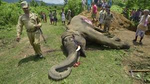

| Elefante |
El elefante de la sabana y el elefante africano de bosque han entrado en la categoría de animales en peligro de extinción debido a la caza furtiva de marfil y a la importante pérdida de su hábitat a causa de las actividades humanas. Ambos elefantes han sido añadidos este jueves a la “Lista Roja” de la Unión Internacional para la Conservación de la Naturaleza (UICN), un documento que incluye a todas las especies en peligro y que es ampliamente utilizado en el medio conservacionista. El número de elefantes africanos de bosque ha caído en un 86 % en 31 años y los de sabana en un 60 % en el último medio siglo, según la organización, que ha estimado que quedan 415.000 ejemplares de ambas especies en el planeta. |
| El primero se considera ahora en “peligro crítico”, mientras que el segundo está en la categoría inferior de “peligro”, como producto de la primera evaluación que se ha hecho de estas especies por separado. |
|
Los científicos han logrado establecer que los elefantes africanos de bosque habitan en las selvas tropicales de África Central y en África Occidental y no coinciden con la otra especie, que se suele encontrar en los pastizales y desiertos del África Subsahariana.
El elefante de bosque ocupa ahora un cuarto de su territorio histórico y sus poblaciones más grandes se pueden encontrar en Gabón y en la República Democrática del Congo, gracias a los esfuerzos de conservación, que han incluido medidas contra la caza furtiva y la reconversión de sus hábitats. El Área de Conservación Transfronteriza de Kavango-Zambezi (área de convergencia de cinco países en el sur de Africa) alberga la mayor subpoblación de elefantes de sabana en el continente.

|
Soluciones
Los elefantes son animales en peligro de extinción y esto es una afirmación que cada uno de nosotros debe tomar muy seriamente, ellos son animales enormes y con un lugar cimero en muchas culturas, sin embargo el número de ellos en lo salvaje continúa disminuyendo en dimensiones alarmantes. Va a ser necesario; educar a las personas, agresivos esfuerzos de conservación, arrestos a cazadores y proteger el habitad natural de estos animales para ayudarlos a sobrevivir.
Las medidas incluyen un acuerdo sobre el fortalecimiento en la capacidad de las organismos nacionales para enfrentar a los sindicatos de la caza y aumentar la cooperación internacional en materia de extradición y embargo de bienes ilegales. |
|
|
|
|